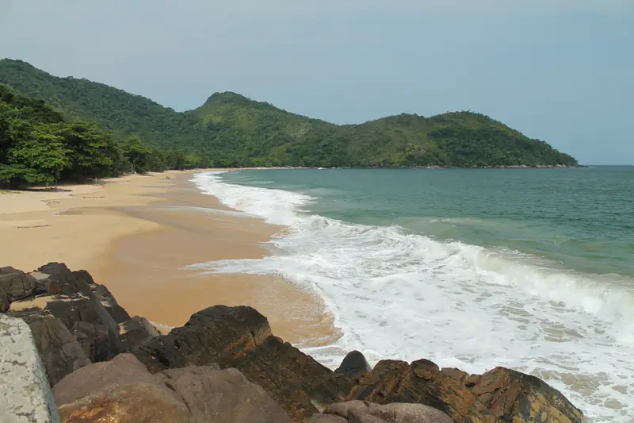
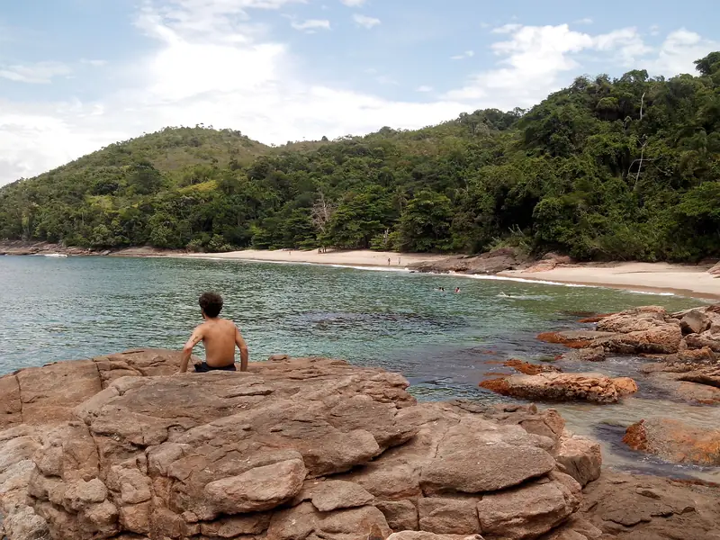
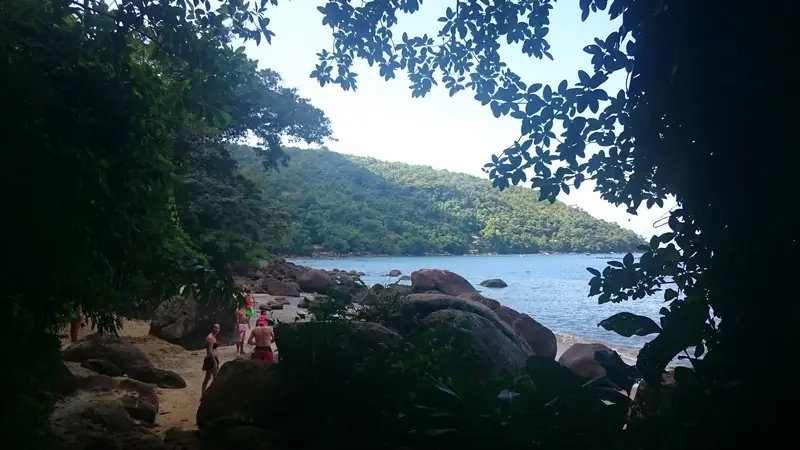
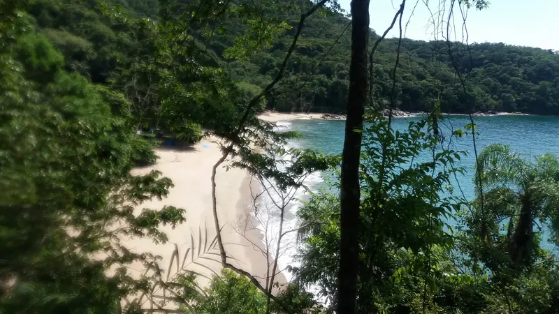

Travessia das 7 praias de Ubatuba
Sete praias em um único dia, a pé, com guia. Uma trilha de 4 a 5 horas que sai em grupo, com data marcada.
Trilha 4 a 5 horasPraias 7Grupo a partir de 14 pessoas
Ver a próxima data

As sete praias, na ordem
- Praia da Fortaleza
- Praia do Cedro
- Praia Deserta
- Praia do Bonete
- Praia do Bonetinho
- Praia do Oeste
- Praia da Lagoinha



Uma trilha que sai em grupo
A travessia precisa de reserva prévia e só sai com pelo menos 14 pessoas. Por isso as datas são marcadas com antecedência.
Tem saída de São Paulo?"Fiz a trilha das setes praias e foi uma experiência incrível. A guia Gi é muito atenciosa e explica sobre a cidade, as comunidades locais e sobre a vegetação. Também se preocupou com a segurança durante todo o percurso e fez a trilha com calma para que pudéssemos aproveitar as paisagens e tirar fotos. As praias são lindas, vale muito a pena. Recomendo!"
Perguntas sobre a travessia
Quanto tempo dura a trilha?
De 4 a 5 horas de caminhada, passando por sete praias no mesmo dia.
Preciso reservar antes?
Sim. A travessia só sai com reserva prévia e com no mínimo 14 pessoas no grupo.